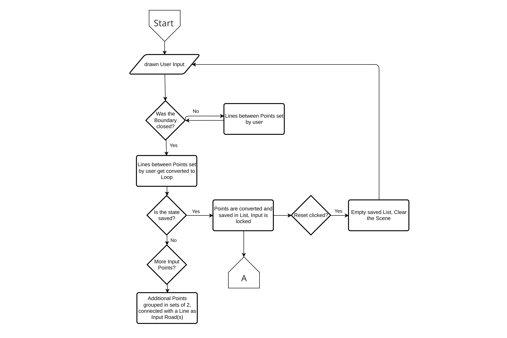
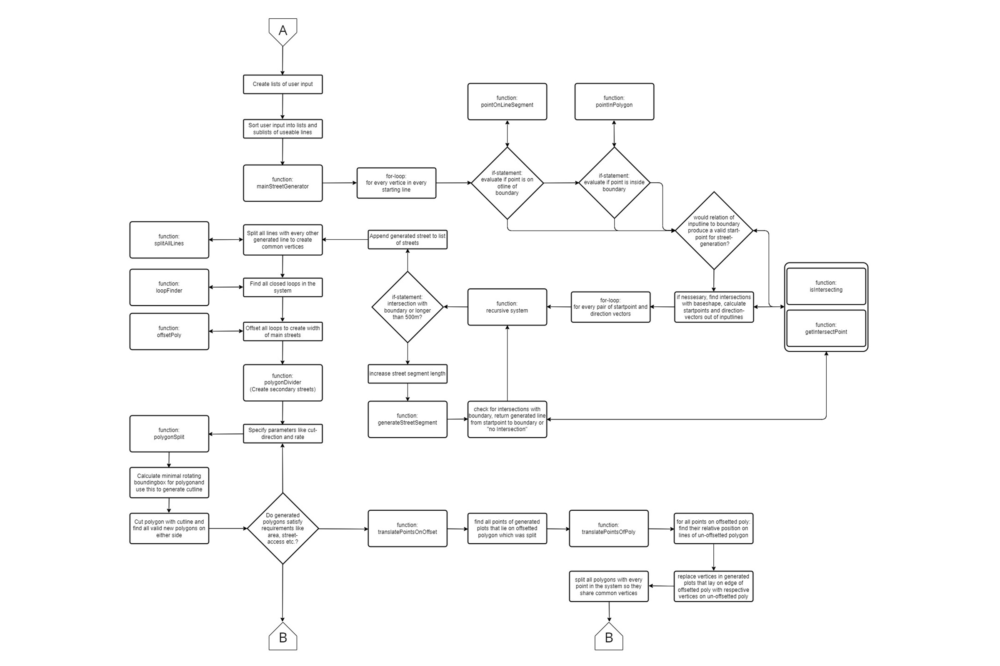
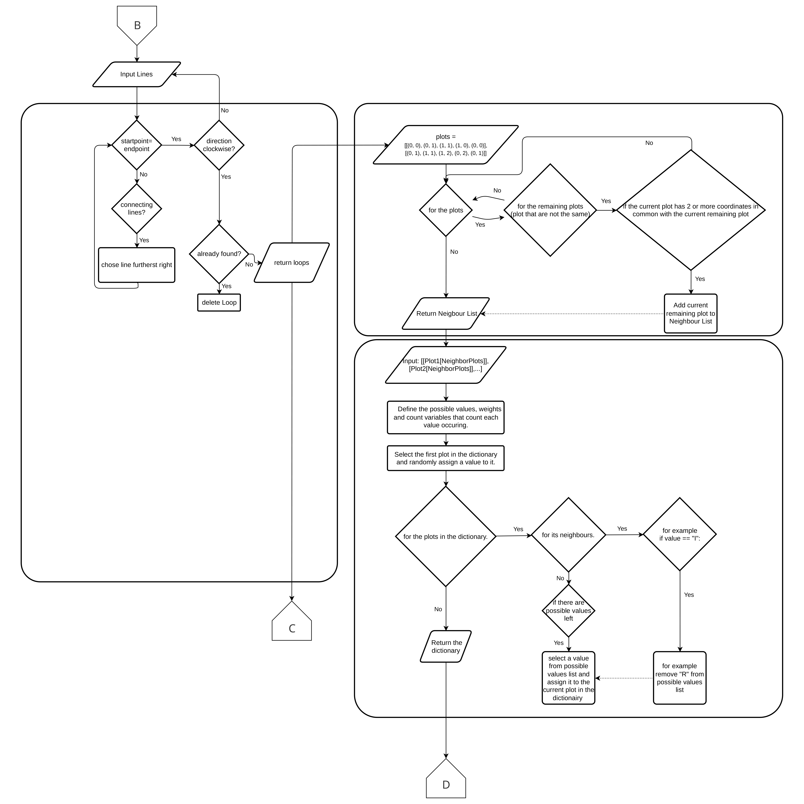

City Draft Information
Input
The Input for the generation of a city is designed to be as user friendly as possible.
A ground plane represents the are in which a user can define a district. This is done by double clicking on the plane to spawn controlpoints.
if there is more then one controlpoint the newest controlpoint connects with the one spwaned before. If the Boundary line is closed,
new spawned controlpoints represent Input Roads and only connect in pairs of two. This is made possible by using a raycaster to intersect
with the ground plane to get the projected position of the mouse on the generating Area, to know the location on where to put/move the controlpoint, and also interecting with the created control points to pick them out of a list.
All the controlpoint-Spheres can be moved with a Mouseclick, until the state is saved, and the Input information is passed to the Main Street generation.
Flowchart
Street generation
This part of the algorithm takes user-defined vertices that define the boundary of the building site and input lines, also placeable by the user,
that serve as starting points for the generation of the main street network. The main streets are generated by first checking if the individual input
lines provided by the user would generate valid streets. If this is the case, the algorithm calculates possible intersections with the boundary line
and generates generation starting points with accompanying direction vectors out of the given information.
Next, a recursive algorithm iterates through the list of starting points and direction vectors and starts generating streets out of them. The length
of the currently generated street is increased for each iteration until an intersection with the boundary or another street is detected. Then, a final
street is generated out of the starting point and intersection point and appended to a list of streets.
In preparation for the following parts of the algorithm, these street segments are then divided by every other generated street segment so that every street
ends at every point it crosses.
Current Challenges include the user input which at some point is supposed to be achieved through THREE TransformControls to make vertices of the base shape
click- and draggable, as well as the generation of a secondary street network which is not yet realized. The secondary street network is supposed to be created
by extracting and offsetting the plots generated from the main streets and then subdividing these by placing additional streets.
Flowchart
Plot finding and Assignment
This section can be split in 3 parts for better understanding.
The first part takes a Set of Lines as an Input and searches for all "plots" enclosed by lines.
It does that by following a line starting from any point on the outer line and always moving clockwise to the next connecting line.
If there is more then one line connecting it will turn the furthest right. It will start from any Point and continue to turn right until it reaches a visited point again or
until there are no further connected lines. It repeats this process for all possible starting points, ignoring already found closed loops.
Those found closed loops will be passed on to the third part.
The second part searches for the neighbouring plots. It does that by looking for all the plots that share 2 or more coordinates with the current plot.
it outputs the result in a List like this [PlotNr[Neighbouring Plots]] and passes it on to the third part as well function.
The third part first declares a list of possible values and their respective weight and also declares the count of each value as 0. Then it selects the first
plot in the dictionary and assigns a random value chosen from the list of possible values to that plot in the dictionary.
The algorithm then loops through the plots in the dictionary and for each plot, it loops through its corresponding list of neighbors. For each neighbor,
it checks the value assigned to that neighbor and based on that it may remove a certain values from the list of possible values.
If a certain value reaches a set threshold, the function may remove that from possible values.
The function then assigns random value to each plot in the dictionary from the possible values (list) but with the updated weight.
It also keeps track of the count of each value assigned. This part then returns the modified dictionary with assigned values.
Flowchart
Visualisation
In this last part of the algorithm, the appearance and size of the buildings, as well as the planes are calculated and visualized according to thei Assignment and the Input variables. The plots are always offset once to create a substreet Network. The smaller offset fors the plot boundary.
greenery:
The offset is filled with a green mesh. The Algorithm keeps track of all the Areas of generated greenery, to output the total amount of green Space and the amount of green Space per person.
education:
The plot boundary is offset again by an amount that ensures that the geometry formed by the offset has no segment that is to short to be a valid building. That geometry is Extruded and capped. The Algorithm keeps track of all the created plot areas, to calculate the total of space for education.
offices:
The office buildings are generated in a similar way to the education buildings, but the offset value depends on the height of the builing, which depends on the slider input workplaces. The Algorithm keeps track of the created floor area to calculate the amount of workplaces.
industrial:
The plot is split in smaller plots. The areas of the plot are calculated and the biggest plot is the plot on which is built. This represents an industrial used site, where exterior space is needed for heavy machines, trucks etc.
The value by which this biggest plot outline is offset to form the building is dependant on the height of the building, which is a user input, and it`s shortest side, so that the geometry is valid for the building.